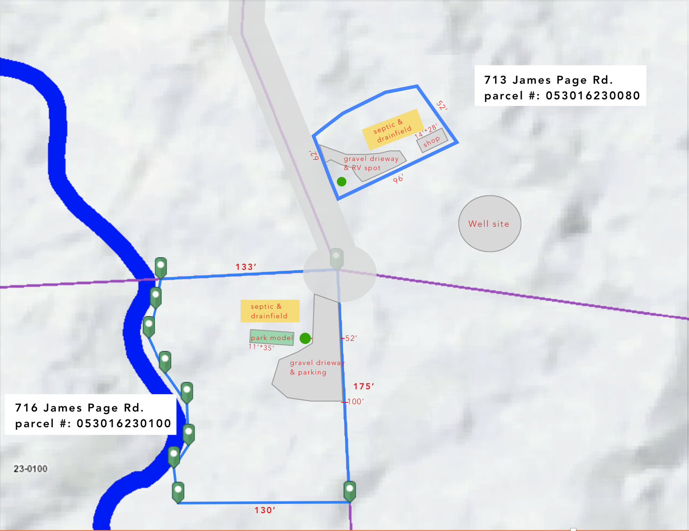

Wanted: General Contractor to take over residential construction project
Project Summary
We own two 5 acre parcels on James Page Rd (713 & 716) in Port Angeles. We have ordered a 11'x35' park model home (this model) that will be delivered to the property in February 2023. A good amount of work needs to done before then (see Project Details below). We were planning on filling the role of general contractor ourselves but after realizing the number of subcontractors required we have come to the conclusion that money paid to a general contractor will be money well spent, so we are looking for someone to take over the project. We recently closed on land equity loan giving us the funds for this project.
About Us
Jacob is a Software Engineer, and Abby is Instructional Deisginer. We are lucky enough to both work from home. We bought 713 James Page Rd. in November of 2020 with a dream of living in the beautiful Port Angeles forest. From May - Oct 2021, we lived on the property in our campervan and we have been renting a small place in Sequim since then.

Project Details & Plan
Phase 1: Park Model Home Prep & Utilities
- Start the building permit for the shop on 713. Building the shop is a part of phase 3, but we need the building permit to get a well permit
- Well permit and mitigation through Dungeness Water Exchange
- Well drilling on 713 (see plan above for general well placement)
- Bring power to lot (currently 770 ft. down the shared driveway/easement). We have been working with Brendan Hanan at Clallam PUD
- Well share agreement so both lots can use the well
- Septic testing and design for 716 & 713. A septic feasibility test was done when purchasing 713 (Report) in Nov 2020.
- Site prep excavation on 716 (including tree removal)
- Septic install on 716
- Gravel driveway and parking on 716
- Park Model Home placement on 716
Phase 1 timeframe: Finished by Feb 2023 (when park model home is delivered)
Phase 2: Deck and Frencing on 716
- Mobile saw mill of cedars for deck & fence
- 620 linear ft of fencing
- Deck with pergola for Park Model Home
Phase 2 timeframe: Preferably by Feb 2023, but later is okay
Phase 3: Shop & RV spot on 713
- Site prep and excavation on 713
- Gravel driveway & RV spot install on 713
- Septic install on 713
- Shop build/install on 713
- 300 linear ft of fencing on 713